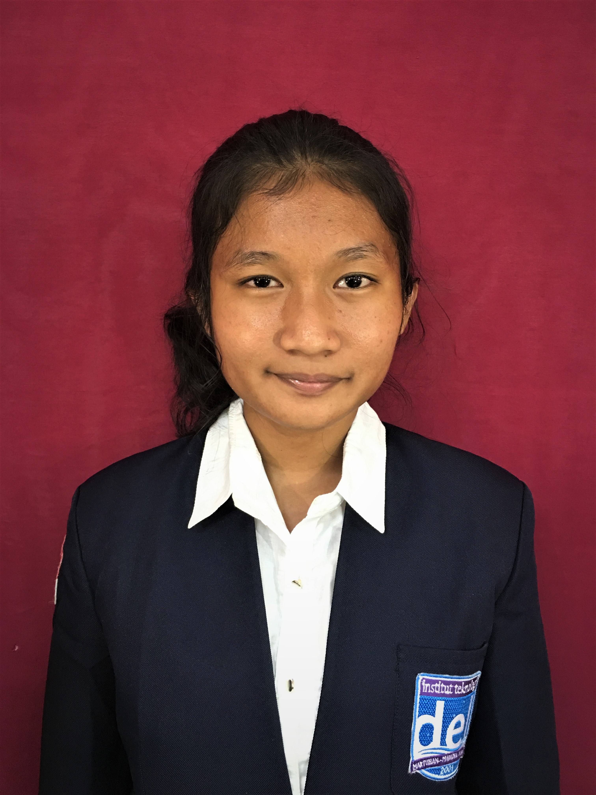

Kontak saya
Github
Yohana Christine Sitanggang

Mahasiswa semester 5 di Institut Teknologi Del, program studi Sistem Informasi. Bersemangat dalam bidang teknologi informasi dengan fokus pada pengembangan sistem informasi dan manajemen data. Memiliki keterampilan dalam pemrograman Java, C, HTML, CSS, dan JavaScript, serta pengelolaan basis data MySQL. Memahami BPMN dan rekayasa kebutuhan. Mencari kesempatan untuk menerapkan pengetahuan dan keterampilan dalam lingkungan kerja yang menantang dan dinamis. Saya adalah individu yang semangat pantang menyerah, jujur, dan pandai dalam bersosialisasi.
Edukasi :
2022 - present : Bachelor of Information Systems, Institute Technology Del
2019 - 2022 : Senior High School, SMA Negeri 12 Medan
2016 - 2019 : Junior High School, Swasta Kalam Kudus Medan
Proyek :
Menulis dokumen AMDAL dengan fokus pada tahap pasca operasional dan dampaknya.
Mengembangkan sistem informasi untuk mendukung optimalisasi aktivitas pengolahan data.
Menyelesaikan kasus pemrograman berbasis objek menggunakan bahasa Java, dengan fokus pada implementasi prinsip-prinsip OOP.
Merancang dan menyelesaikan algoritma untuk studi kasus tertentu menggunakan Flowgarithm, untuk memvisualisasikan alur logika program.
Mengembangkan solusi pemrograman prosedural untuk berbagai kasus studi menggunakan bahasa C, dengan penekanan pada efisiensi dan struktur kode.
Menyusun dan menyelesaikan dokumen Sistem Requirement Specification (SYRS) yang komprehensif, untuk mendukung pengembangan sistem informasi yang terstruktur dan terdokumentasi dengan baik.
Kegiatan Ekstrakulikuler :
Asisten Dosen Matakuliah Matematika Diskrit
Anggota Himpunan Mahasiswa Sistem Informasi
Departemen Himpunan dan Pengabdian Masyarakat BEM
keterampilan Profesional :
Pemrograman : Java, C, HTML, CSS, JavaScript, Flowgarithm
Database : MySQL
Analasis Proses Bisnis : BPMN, DFD
kepemimpinan : Memimpin tim, Memiliki tanggung jawab dan kemampuan membagi waktu
Komunikasi: Baik lisan maupun tertulis